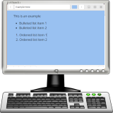

<div class="header"><h1 class="title">Take Notes</h1></div>

<div class="main">

<div class="content"><ul>
	<li>Edubuntu ships with <em>GNOME Notes</em>, a desktop note taking application.</li>
	<li>Take notes during lectures and meetings.</li>
	<li>Create multiple notebooks and share them through email</li>
	<li>Synchronize to Nextcloud or Owncloud.</li>
</ul></div>

</div>


